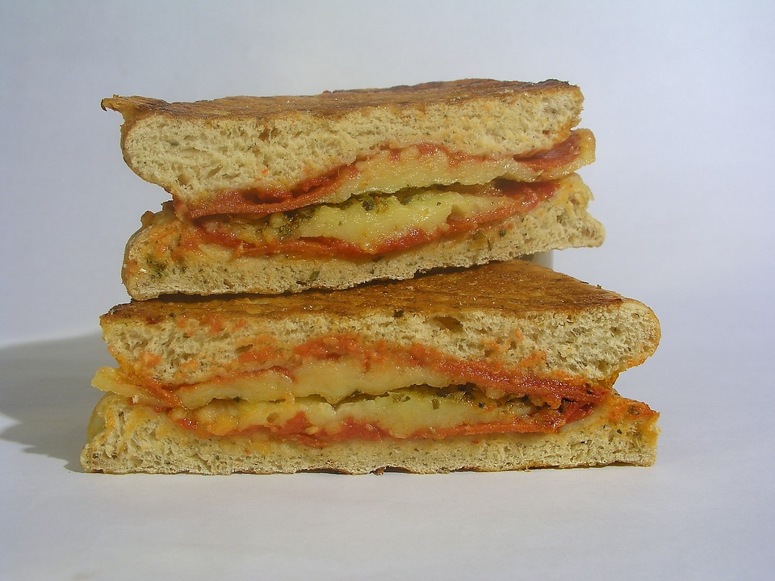

Grilled Cheese

Description
This is an adaptation of the official Grilled Cheese from the local Grilled Cheese truck
Ingredients
- 1 tablespoon of Mayo
- 2 slices crusty continental bread
- 2 slices of cheese
Steps
- SPREAD one slice of bread with mayonnaise. Place bread Mayonnaise-side-down into hot skillet; add cheese.
- SPREAD other slice of bread with Mayonnaise and place Mayonnaise-side-up on top of cheese.
- COOK until lightly browned on one side. Flip over and cook until cheese is melted.